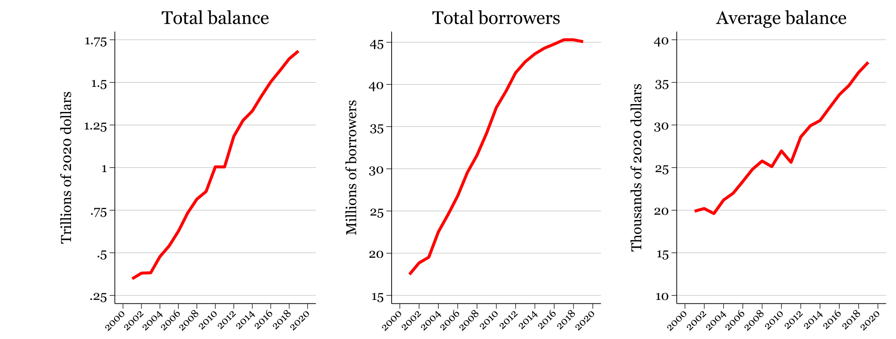
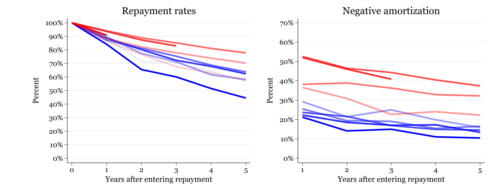
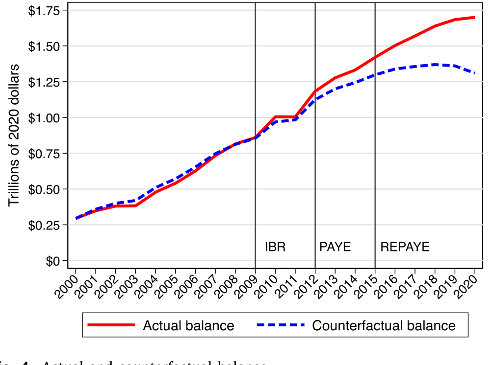
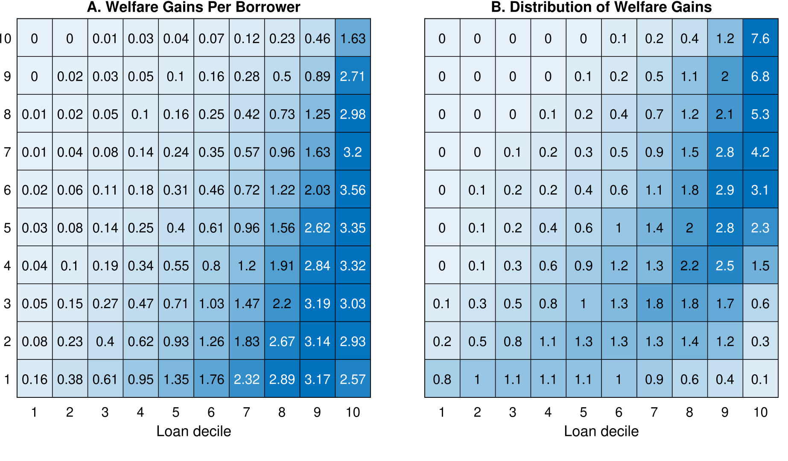
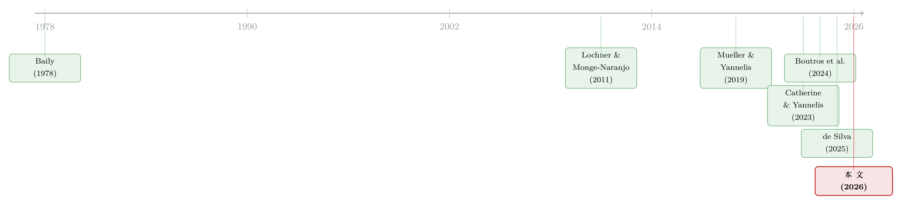

欠得越久，过得越好？——学生贷款里那场静悄悄的「付款延期」
本文读的是 Catherine, Ebrahimian & Yannelis (2026, Journal of Financial Economics)：用一家美国征信局的信贷面板，作者发现 2010 年以来美国学生债务激增中，将近一半并不是因为更多人借、或借得更多，而是因为大家还得更慢了——收入挂钩还款 (income-driven repayment, IDR) 计划把还款从年轻时推迟到了人生后段。更妙的是，他们用一个生命周期模型证明：这种「拖延」不全是坏事，它平滑了消费、对冲了收入风险；而一个重新校准过的计划，能在少花纳税人两万美元的前提下，让借款人过得更好一点。
1 一个反常的事实
先讲一个会让你愣一下的数字。
从 2002 到 2020 年，美国家庭各类债务都在涨：房贷、车贷、信用卡，涨幅都不到 200%——哪怕是 2008 金融危机前疯涨的房贷也是如此。唯独一类债务，在同一段时间里翻了六倍多。它就是学生贷款。
这是本文的出发点（论文 Fig. 1）。一个自然的解释马上会浮现在脑子里：是不是上大学的人变多了？是不是每个人借得更多了？这两件事确实都发生了——2001 到 2020 年间，借款人数从 1500 万翻到 4500 万，整整三倍；人均余额也从约 $20,000 翻倍到接近 $40,000。

Figure 2: Student loan aggregates
但人数翻三倍、人均翻一倍，乘起来也远不够解释「六倍」。中间这块差额是从哪来的？
接着，一个被政策辩论几乎完全忽略的答案浮出水面：人们还钱的速度，慢下来了。
2 把「还得慢」量化出来
作者用一张图就把这件事讲透了（论文 Fig. 3）。看不同入还款队列 (cohort) 的还款进度：2001 届的借款人，进入还款五年后，初始余额只剩 45%——这正是一个十年标准计划该有的样子。可到了 2015 届，五年之后居然还剩 80% 的余额没还。
更刺眼的是「负摊销 (negative amortization)」——还的钱连利息都盖不住，余额不降反升。在 2017 届里，接近三分之一的借款人处于负摊销状态。

Figure 3: Repayment rates and Negative amortization
这个减速从哪来？答案是 IDR 的崛起。美国学生贷款的还款规则在过去二十年里一路放松：2008 年起，教育部大规模推广把月供和收入挂钩的计划——按收入超过联邦贫困线 (Federal Poverty Line, FPL) 一定倍数之上的部分缴纳固定比例（先是 15%，后降到 10%），并在 20 到 25 年后免除余额。到 2020 年，一半以上的贷款余额已经在 IDR 计划里。
但真正关键的一步，是作者怎么把「慢」翻译成「多了多少钱」。
他们构造了一个反事实 (counterfactual) 余额：假如所有人都老老实实按十年标准计划还款，债务会长成什么样？借款人 \(i\) 的反事实余额按下式滚动：
其中那笔标准计划年供，就是一个普通的等额本息年金公式：
$$R_{std,it} = \frac{r_{L,i}\,L^{CF}_{i,t_0}}{1-(1+r_{L,i})^{-10}}$$
把这条反事实曲线和真实余额画在一起（论文 Fig. 4），结论一目了然：两条线在 2008 年之前几乎重合——说明那之前大家平均确实在按标准计划还款；2008 年之后，真实余额开始显著地高于反事实。

Figure 4: Actual and counterfactual balance
算总账：付款延期累计贡献了 $391 billion，占 IDR 推开以来（2010–2020）学生债务增量的 44%——大约四千亿美元。换句话说，过去十年学生债务的暴涨，将近一半不是「借得多」，而是「还得慢」。这是一个被政策辩论严重低估的事实。
3 但「欠得久」，到底是好事还是坏事？
到这里，故事本可以停在一个略带悲观的结论上：债务雪球越滚越大，纳税人最终买单。
可作者偏要追问下去——对借款人自己而言，把还款从年轻时推到人生后段，是损失，还是恩惠？
直觉上，年轻人恰恰是最缺钱的时候：刚工作、收入低、还可能要买房成家。让他们在这个阶段少还点、等收入起来了再多还，本身就是一种跨期的「挪移」。如果资本市场是完美的，这种挪移无关紧要——你总能自由借贷把消费熨平。但现实是市场不完全 (incomplete markets)：年轻人无法用未来的工资作抵押去借钱，也无法为自己不确定的收入买保险。于是 IDR 在事实上替政府干了两件私人市场干不了的事——放松流动性约束，以及提供收入保险。
这正是把问题从「会计」推向「福利」的转折。要回答「好不好」，光看余额不够，得有一个能算效用的结构化模型。
4 模型：四条让福利上升的渠道
作者搭了一个生命周期模型 (life-cycle model)：家庭进入劳动力市场，领取随机的、带特质性冲击的收入，在不完全市场下做消费-储蓄决策，同时按既定的 IDR 规则偿还学生贷款。由于年轻时借不到、也保不了险，借款人无法实现理想的消费路径——而 IDR 恰好部分地填补了这道缺口。
（这一类「不完全市场 + 生命周期」的定量框架，正是近年家庭金融研究的主力工具；关于它如何被用来回答一个真实的家庭决策问题，可参见《半套房子：当「租还是买」不再是单选题》。）
模型最漂亮的地方，是作者把 IDR 带来的福利收益干净地拆成四条渠道，让你看清每一块钱的福利到底来自哪里：
- 渠道一：减少终生还款额。 IDR 让借款人少还了钱——但这块纯粹是从纳税人口袋转移到借款人口袋，是再分配，不创造社会净福利。
- 渠道二：消费平滑。 把还款从高边际效用的年轻期，挪到低边际效用的中老年期，本身就提升了效用。
- 渠道三：收入保险。 在收入低的「坏状态」里少还，等于给特质性收入风险上了一份保险。
- 渠道四：缩小不平等。 如果 IDR 恰好补贴了那些终生消费更低的人，还能顺带改善社会福利。
这套分解的好处在于：它把「IDR 是好政策吗」这个含糊的问题，翻译成了「这四块各占多少」的可计算问题。
5 主要结果：五万美元从哪里来
把模型校准到数据上，作者算出：现行 IDR 规则下，平均每位借款人的福利提升约 $50,600（论文文中也称「将近 5.1 万美元」）。
这五万块怎么分？
- 来自纳税人转移（渠道一）：47.5%——接近一半；
- 来自生命周期消费平滑（渠道二）：29.9%；
- 来自收入风险保险（渠道三）：21.3%；
- 来自缩小不平等（渠道四）：0%——几乎没有。
最后这条 0% 很值得玩味。IDR 表面上偏向低收入借款人，但它同时也厚待了那些余额巨大的人——而大额余额往往属于高收入的研究生借款人。一正一负抵消，缩小不平等这条渠道并没贡献净福利。

Figure 7: Welfare Gains Per Borrower by decile of debt and income
别被「五万美元福利」冲昏头：其中近一半（渠道一）只是纳税人替借款人还了债，是再分配而非帕累托改进。真正「无中生有」创造价值的，是消费平滑和保险这两块（合计约 51%）。这正是下一步政策讨论的关键——能不能少花纳税人的钱，多保留后两块？
6 关键反转：一个更省钱、却更好的计划
既然现行规则里一半的福利只是纳税人补贴，那么自然要问：这笔补贴花得值不值？
作者分两步回答。
第一步，他们不做几个零散的政策实验，而是连续地搜索 IDR 参数空间，找出「给定纳税人成本下、借款人福利最大」的校准。结果指向一个反直觉的方向：最优计划要把还款期大幅拉长——一直延到退休年龄。
为什么拉长反而更好？因为更长的还款期让政府能在人生后段把钱收回来；在固定财政成本下，这笔后期回款的现值，腾出空间去抬高免缴门槛。具体而言，最优校准把还款比例从 10% 提到 24.4%，同时把门槛从 FPL 的 150% 一路抬到 237%——并且月供仍由十年标准计划的公式封顶。门槛抬高，保护的正是年轻时、低收入状态下的消费——那些边际效用最高的时刻。于是同一块财政资金，既买到了更好的保险，又买到了更好的跨期平滑。
第二步更尖锐：纳税人到底该补贴多少？ 如果社会规划者对借款人和纳税人一视同仁（并计入加税本身的财政外部性），作者发现净福利在人均补贴 $4,300 处最大化——而现行规则的补贴高达 $24,100。也就是说，现在的补贴超额了五倍。
把这两步合起来，就是本文最有冲击力的一句话：相比现行规则，最优校准能让人均福利再多 $1,000，同时把纳税人成本砍掉约 $20,000。更好，且更省。而且因为它大幅削减了隐性补贴，连「补贴诱导多借、推高学费」的道德风险 (moral hazard) 都顺带降低了。
7 用这把尺子，量一量现实政策
有了这套框架，作者顺手评了两个真实的政策。
SAVE 计划（2022 年推出、2024 年被联邦法院叫停）：它把免缴门槛抬到 FPL 的 225%、本科生还款率砍半到 5%、并取消负摊销。看上去很慷慨——模型也确认它让借款人福利再增 $5,300。但问题是，这 5300 块全部来自纳税人增量成本，没有一分钱是新创造的保险或平滑价值。更糟的是，它缩短了还款期、抬高了财政成本——恰好与本文「拉长、省钱」的主张背道而驰。
RAP 计划（2025 年 7 月生效）：它把免缴前的还款期延到 30 年。模型说它让借款人福利减少 $1,000——但换来的是人均 $7,000 的财政节省。一减一省之间，方向是对的：这点福利损失，远小于它省下的钱。
一句话总结作者的政策立场：真正该做的是「延长 + 抬门槛」，把延长还款期省下的大部分财政红利还给纳税人；若想补贴学生超过 $4,300 这条线，也该用助学金 (grants) 去补，而不是把 IDR 规则改得更慷慨。
8 文献脉络
把这篇论文放回它生长的谱系里，它其实站在两条河流的交汇处。
一条是最优社会保险的老传统：从 Baily (1978) 关于最优失业保险的经典出发，到 Hopenhayn & Nicolini (1997)、Chetty (2006) 把「保险 vs 激励」的权衡推向精细。本文做的，是把这套「在不完全市场里给风险定价」的思想，搬到学生贷款这个新场景。
另一条是学生贷款本身的实证与结构研究。早期 Lochner & Monge-Naranjo (2011) 从信贷约束与人力资本的角度立论；随后 Mueller & Yannelis (2019) 记录了违约的上升、Catherine & Yannelis (2023) 量化了债务豁免的分配效应。到 Boutros et al. (2024)，研究开始正面进入「还款计划的定量设计」——他们发现把还款期延后十年能改善偿付能力、降低 IDR 的财政成本。本文与之最近，但走得更远：不再只比较几个离散政策，而是在连续参数空间里找最优，并进一步追问「政府究竟该补贴多少」。几乎同时，de Silva (2025) 从「保险 vs 道德风险」的角度给出互补的证据。

本文恰好坐落在这两条河的下游：它既是一篇有新事实（44% 来自付款延期）的实证论文，又是一篇能给出规范性结论（最优计划该长什么样）的结构化论文。
9 评论与延伸（Q&A + 研究方向）
(a) 几个可能的疑问
Q：「44% 来自付款延期」会不会只是 2008 金融危机的后遗症？
作者正面回应了这一点。如果减速主要由危机驱动，效应应随时间消退；但数据恰恰相反——晚十年毕业的队列还得更慢。这与「IDR 规则越来越为人知、越来越慷慨」一致，而非一次性冲击的尾巴。
Q：五万美元的福利收益，是不是把「纳税人补贴」也算成了借款人的「好处」，有点偷换概念？
不算偷换，但必须读清楚分解。作者明确把纯转移（47.5%）单列为渠道一，并反复强调它不创造社会净福利。真正稳健的「价值创造」是消费平滑（29.9%）加保险（21.3%）。本文的政策主张恰恰建立在「砍掉多余补贴、保住后两块」之上。
Q：把还款期拉到退休，难道不会让一身债拖累人一辈子？
关键在于「拉长」要和「抬高门槛 + 月供封顶」打包。拉长本身只是给政府一个在后期收钱的窗口；省下的财政空间被用来抬高免缴门槛，保护年轻、低收入状态下的消费。作者也指出，这种「默认进入、终身缴纳」的设计很像澳大利亚的学生贷款体系。
Q：补贴一旦更慷慨，学生会不会借更多、学校会不会涨学费？
这正是作者谨慎之处。他们的基准假设毕业时债务分布固定。但他们指出：现行规则下大多数本科借款人的债务已接近公允定价，而 SAVE 会让很多人只需偿还借款的三分之二甚至更少——这才是真正会诱发多借、推高学费（Eaton et al., 2020；Lucca et al., 2019）的设计。最优校准因为削减了隐性补贴，反而降低道德风险。
Q：这套方法只能用在学生贷款上吗？
不。作者强调这套「把福利收益分解成转移/平滑/保险/再分配四块」的方法是通用的，可以搬到任何「在流动性约束 + 不可保收入风险下设计公共政策」的场景——失业保险、退休制度、医保都属此类。
(b) 几个可能的研究问题与提案
1. 把「付款延期」的逻辑搬到公司信用市场。 - 【经济故事】疫情期间大量企业债经历了展期、契约豁免、利息资本化——和学生贷款的「负摊销」何其相似。企业层面的「还款延期」有多少提升了存续价值（流动性保险），又有多少只是把违约推后？ - 【可行性】中。需要 Mergent FISD / TRACE 的债券层面现金流与契约修订数据，识别上可借鉴本文的反事实余额构造（「假如按原合同还款」）。难点在于企业不像家庭有清晰的 FPL 门槛，异质性更大。
2. 外资持有人对主权/学生贷款类资产的「耐心」差异。 - 【经济故事】本文的福利全部落在国内借款人 vs 国内纳税人之间。但若一国把学生贷款或类似的政策性债务卖给外国投资者，付款延期的财政成本就部分外溢了。外资持有比例是否改变了政府延长还款期的最优选择？ - 【可行性】中偏低。需要跨国的政策性贷款持有人结构数据，识别较难，更像是一个理论建模 + 校准的题目。
3. 流动性约束的「门槛」效应：抬高免缴线到底救了谁？ - 【经济故事】本文说抬门槛之所以优于降利率，是因为它精准命中高边际效用状态。但这是模型推断。能否用 SAVE 短暂生效期间门槛的真实跳变，做一个准实验，直接看哪些借款人的消费/违约真的被门槛保护到了？ - 【可行性】高。SAVE 在 2023–2024 短暂落地又被叫停，提供了门槛参数的外生变动；配合征信局的月度余额与拖欠数据，可做断点/事件研究，直接检验模型机制。
10 我的判断
这是一篇「用一个被忽视的会计事实，撬动一个规范性大问题」的范本。
贡献有三层，且层层递进：第一层是事实——把学生债务暴涨的近一半归因于付款延期，$391 billion，这个数字本身就值得进政策简报；第二层是机制——用四渠道分解把「五万美元福利」拆得明明白白，戳破了「IDR=慷慨=好」的直觉；第三层是规范——连续参数搜索得出「延长 + 抬门槛、且补贴只需现行五分之一」的最优设计，并据此干净利落地否决了 SAVE、肯定了 RAP 的方向。三层都扎实。
对识别（更准确说是对定量结论）的担忧，我有两点。其一，整套规范性结论高度依赖生命周期模型的校准——尤其是收入过程的参数（Guvenen et al., 2021；Gourinchas & Parker, 2002）和风险厌恶系数。「最优补贴 $4,300」「多 $1,000 福利」这类精确数字，对这些假设的敏感性有多大，值得一张更完整的稳健性谱（作者团队此前在 Catherine et al., 2022 里专门研究过结构分析的稳健性，这里本可更充分地展开）。其二，基准里「毕业时债务分布固定」是个强假设——而作者自己也承认，补贴的慷慨度恰恰会反过来改变借多少、学费定多高。一旦把这个内生反馈放进来，最优补贴是会更低（因为要压道德风险）还是更高，并非一目了然。
后续我最想看到的，是把这套框架直接对接到一次真实的政策跳变上做外部验证——SAVE 的「闪现又消失」其实是个难得的自然实验。如果模型预测的「门槛抬高如何改变消费与拖欠」，能在征信数据里被事件研究直接证实，那这篇论文就从「漂亮的定量推断」升级成了「被现实背书的政策处方」。在那之前，它已经足够好：它让我们第一次看清，学生债务那座越滚越大的雪球里，有近一半，其实是我们主动选择「以后再还」的结果——而这个选择，远比它看上去要划算，也远比它本可以是的，要贵。
参考文献
- Baily, M.N. (1978). Some aspects of optimal unemployment insurance. Journal of Public Economics 10(3), 379–402.
- Boutros, M., Clara, N., Gomes, F. (2024). Borrow now, pay even later: A quantitative analysis of student debt payment plans. Journal of Financial Economics 159, 103898.
- Catherine, S., Yannelis, C. (2023). The distributional effects of student loan forgiveness. Journal of Financial Economics 147(2), 297–316.
- Catherine, S., Ebrahimian, M., Yannelis, C. (2026). How do income-driven repayment plans benefit student debt borrowers? Journal of Financial Economics 178, 104253.
- Chetty, R. (2006). A general formula for the optimal level of social insurance. Journal of Public Economics 90(10), 1879–1901.
- de Silva, T. (2025). Insurance versus moral hazard in income-contingent student loan repayment. Quarterly Journal of Economics 140(4), 2851–2905.
- Eaton, C., Howell, S.T., Yannelis, C. (2020). When investor incentives and consumer interests diverge: Private equity in higher education. Review of Financial Studies 33(9), 4024–4060.
- Gourinchas, P.-O., Parker, J.A. (2002). Consumption risk over the life-cycle. Econometrica 70(1), 47–89.
- Guvenen, F., Karahan, F., Ozkan, S., Song, J. (2021). What do data on millions of U.S. workers reveal about lifecycle earnings dynamics? Econometrica 89(5), 2303–2339.
- Hopenhayn, H.A., Nicolini, J.P. (1997). Optimal unemployment insurance. Journal of Political Economy.
- Lochner, L., Monge-Naranjo, A. (2011). The nature of credit constraints and human capital. American Economic Review 101(6), 2487–2529.
- Lucca, D.O., Nadauld, T., Shen, K. (2019). Credit supply and the rise in college tuition: Evidence from the expansion in federal student aid programs. Review of Financial Studies 32(2), 423–466.
- Mueller, H., Yannelis, C. (2019). The rise in student loan defaults. Journal of Financial Economics 131(1), 1–19.